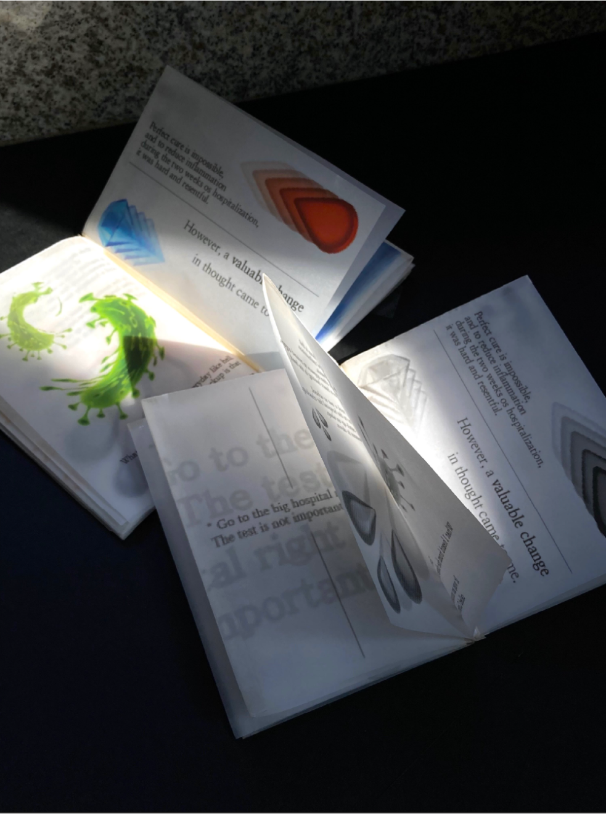
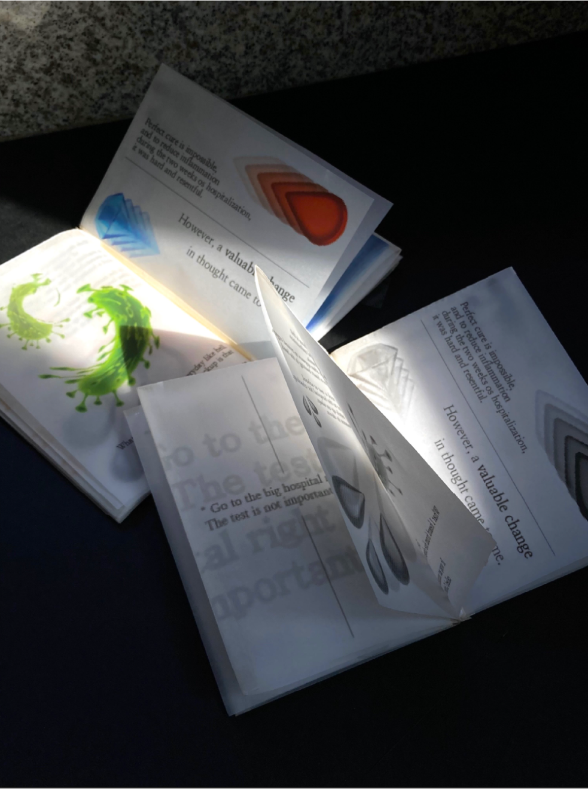
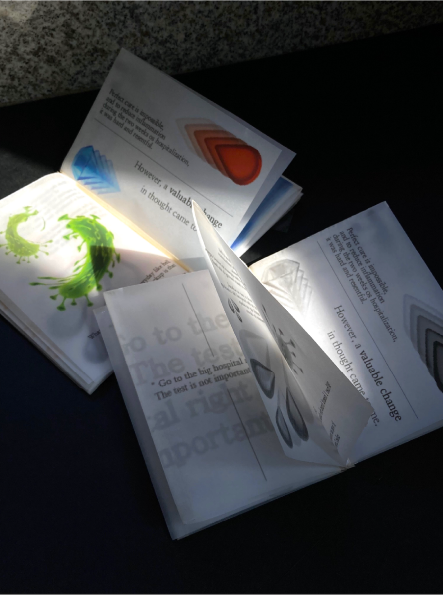

Project
Contact
@hwanbo__
Designer
Mapping Time
황보나현
MMM : My Memory Map
Category
-
나에게 가장 중요한 때인 난치병으로 입원했을 시기를 time map으로 제작하였다. 왜 이시간이 의미있는 시간으로 남게
된건지, 그 이유를 스토리가 담긴 책으로서 time map을 표현하였는데, 트레이싱지를 활용해 시간의 연속성과 더불어
과거의 경험과 현재의 깨달음을 동시에 보여준다.



 
